<!DOCTYPE html>
<html lang="en">
  <head>
    <meta charset="utf-8" />
    <meta name="viewport" content="width=device-width, initial-scale=1.0, maximum-scale=1.0, user-scalable=no" />

    <title>HTML / CSS - MM4</title>
    <link rel="stylesheet" href="./css/reveal.css" />
    <link rel="stylesheet" href="./css/theme/solarized.css" id="theme" />
    <link rel="stylesheet" href="./css/highlight/github.css" />
    <link rel="stylesheet" href="./css/print/paper.css" type="text/css" media="print" />
    <link rel="stylesheet" href="./external/custom.css" />

  </head>
  <body>
    <div class="reveal">
      <div class="slides"><section  data-markdown><script type="text/template">

## MM4

# HTML / CSS

<aside class="notes"><p><a href="https://nclsndr.github.io/hetic-html-css-mm4-2019">https://nclsndr.github.io/hetic-html-css-mm4-2019</a></p>
</aside></script></section><section  data-markdown><script type="text/template">
## Who am I?

[Nicolas André](https://twitter.com/nclsndr) <br>
UX Engineer at <a target="_blank" href="https://www.chance.co">Chance</a><br>
HETIC Expert graduate
</script></section><section  data-markdown><script type="text/template">
# And you?
</script></section><section  data-markdown><script type="text/template">
## About this cycle

#### 26 nov.
History, HTML/CSS basis, UI design, Let's code
#### 03 dec.
CSS displays, Forms, Code for devices
#### 10 dec.
Web builders, CSS transitions & animations</script></section><section  data-markdown><script type="text/template">
## A bit of tooling
</script></section><section  data-markdown><script type="text/template">
<div>
  
</div>

## Code Sandbox

Signup with Github

[https://codesandbox.io/](https://codesandbox.io/)
</script></section><section  data-markdown><script type="text/template"><div>
  
</div>

## VS Code

Simple code editor

[https://code.visualstudio.com/download](https://code.visualstudio.com/download)
</script></section><section  data-markdown><script type="text/template">
<h1 style="color: #FFF;">Ready?</h1>

<!-- .slide: data-background="assets/ready.gif" -->
</script></section><section  data-markdown><script type="text/template">
# 🧐

### Who is HTML?
</script></section><section  data-markdown><script type="text/template">
### Some valid definition 

__HTML__ (HyperText Markup Language) is the most basic building block of the Web. It defines the meaning and structure of web content. [...]

by [Mozilla docs](https://developer.mozilla.org/en-US/docs/Web/HTML)
</script></section><section  data-markdown><script type="text/template">
# 🤷‍♀️
### Ok, but why?
</script></section><section  data-markdown><script type="text/template">
<h2 style="color: #FFF;">Back in 1969</h2>

<!-- .slide: data-background="https://media.giphy.com/media/3o7aD46cTjbkp0gT5e/giphy.gif" --></script></section><section  data-markdown><script type="text/template">
<div>
  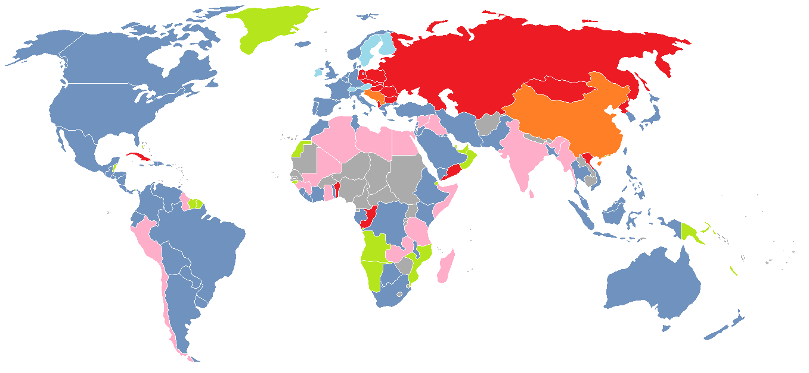
</div>

### 🇺🇸 👮‍♀️ 💬 ☢️ 💬 👨‍💼</script></section><section  data-markdown><script type="text/template">


[Defense Advanced Research Projects Agency](https://www.darpa.mil/about-us/about-darpa) — since 1958</script></section><section  data-markdown><script type="text/template"><div>
  
</div>

## SRI
[Stanford Research Institute](https://en.wikipedia.org/wiki/SRI_International) — since 1946
</script></section><section  data-markdown><script type="text/template"><div>
  
</div>

### [Douglas Engelbart](https://en.wikipedia.org/wiki/Douglas_Engelbart)

American engineer and inventor, and early computer and Internet pioneer

Founder of Augmentation Research Center (ARC) at SRI
</script></section><section  data-markdown><script type="text/template"><div>
  
  
</div>
<div>
  
  
</div>

### 🧑‍🏫 📺 💬 📺 🧑‍🏫

<aside class="notes"><p><a href="https://www.lib.utah.edu/digital-scholarship/arpanet/">https://www.lib.utah.edu/digital-scholarship/arpanet/</a>
<a href="https://en.wikibooks.org/wiki/The_Computer_Revolution/Networks/Internet">https://en.wikibooks.org/wiki/The_Computer_Revolution/Networks/Internet</a></p>
</aside></script></section><section  data-markdown><script type="text/template">> The goal was to exploit new computer technologies to meet the needs of military command and control against nuclear threats, achieve survivable control of US nuclear forces, and improve military tactical and management decision making.

*— [Stephen J. Lukasik](https://en.wikipedia.org/wiki/ARPANET#Debate_on_design_goals), Director of DARPA (1967–1974)*
</script></section><section  data-markdown><script type="text/template">> The ARPANET was not started to create a Command and Control System that would survive a nuclear attack, as many now claim. [...]. Rather, the ARPANET came out of our frustration that there were only a limited number of large, powerful research computers in the country, and that many research investigators, who should have access to them, were geographically separated from them.

*— [Charles Herzfeld](https://en.wikipedia.org/wiki/ARPANET#Debate_on_design_goals), ARPA Director (1965–1967)*
</script></section><section  data-markdown><script type="text/template">### [Request For Comments](https://tools.ietf.org/html/rfc1)

<div>
  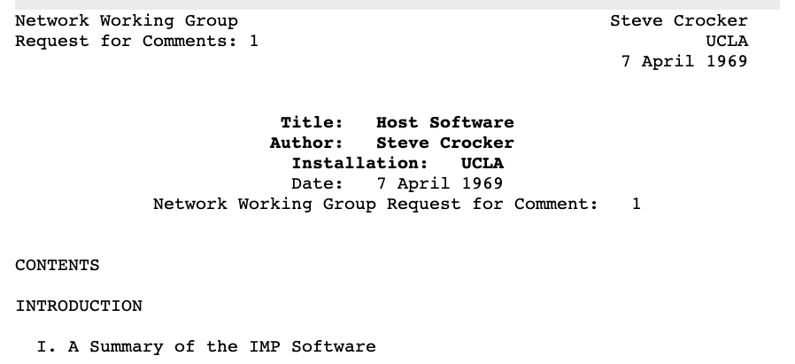
</div>

Applying scientific method for a collaborative definition of world wide standards
</script></section><section  data-markdown><script type="text/template"><div>
  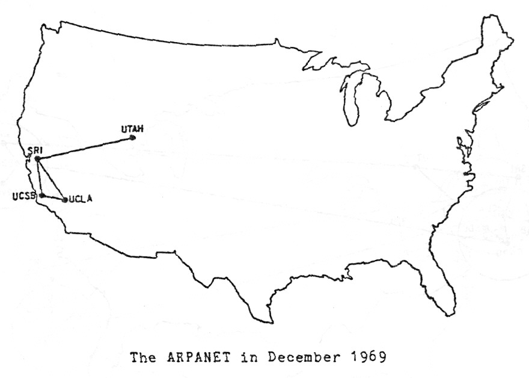
</div>

1969</script></section><section  data-markdown><script type="text/template"><div>
  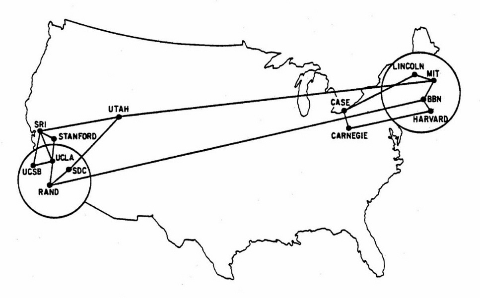
</div>

1970</script></section><section  data-markdown><script type="text/template"><div>
  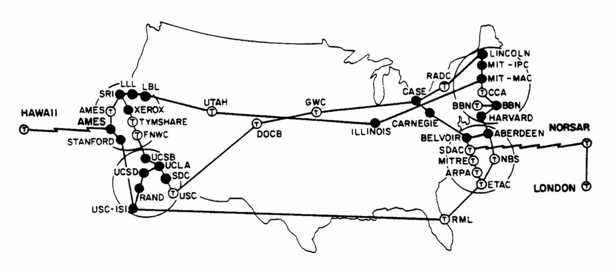
</div>

1973 - 

<a href="https://www.vox.com/a/internet-maps" class="source_link" target="_blank" >
source: vox.com
</a>
</script></section><section  data-markdown><script type="text/template"><!-- .slide: data-background="assets/twitter_wake_up.gif" --></script></section><section  data-markdown><script type="text/template">
## Internet VS Web?
</script></section><section  data-markdown><script type="text/template">
### RFC1122 - Internet Protocol Suite

<div>
  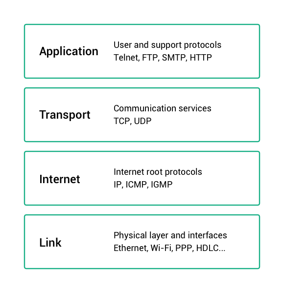
</div>
</script></section><section  data-markdown><script type="text/template">### Internet is a set of network protocols

### The Web is an abstract application on top of it</script></section><section  data-markdown><script type="text/template"><!-- .slide: data-background="assets/the-web.jpg" --></script></section><section  data-markdown><script type="text/template"># The web</script></section><section  data-markdown><script type="text/template">### Who's that guy?

<div>
  
</div></script></section><section  data-markdown><script type="text/template">
<div>
  
</div>

### [Tim Berners-Lee](https://en.wikipedia.org/wiki/Tim_Berners-Lee)

English engineer and computer scientist — CERN researcher</script></section><section  data-markdown><script type="text/template">
## 🧑‍🔬 ✉️ 📡 📞 📬 🧑‍🔬 🤯

Berners-Lee observed how hard it was to share information among researchers — Especially pointing publications related to common topics
</script></section><section  data-markdown><script type="text/template">
<div>
  
</div>

In 1991, the network was growing, expanding possibilities

<a class="source_link" target="_blank"
href="https://en.wikipedia.org/wiki/National_Science_Foundation_Network">
National Science Foundation Network
</a>
<a class="source_link" target="_blank"
href="https://www.computerhistory.org/internethistory/1990s/">
Internet History of 1990s
</a>
</script></section><section  data-markdown><script type="text/template"><!-- .slide: data-background="assets/internet_1993.gif" --></script></section><section  data-markdown><script type="text/template">
World wide messaging was existing

<div>
  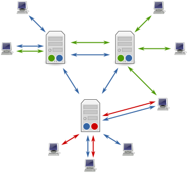
</div>

<a class="source_link" target="_blank"
href="https://en.wikipedia.org/wiki/Usenet">
Usenet since 1980
</a>
</script></section><section  data-markdown><script type="text/template">## But </script></section><section  data-markdown><script type="text/template">## Silo effect

Communication over interconnected networks was hard and not human friendly — No central place where knowledge could be shared.</script></section><section  data-markdown><script type="text/template">## Berners-Lee's vision?</script></section><section  data-markdown><script type="text/template"># 🕸</script></section><section  data-markdown><script type="text/template"><div>
  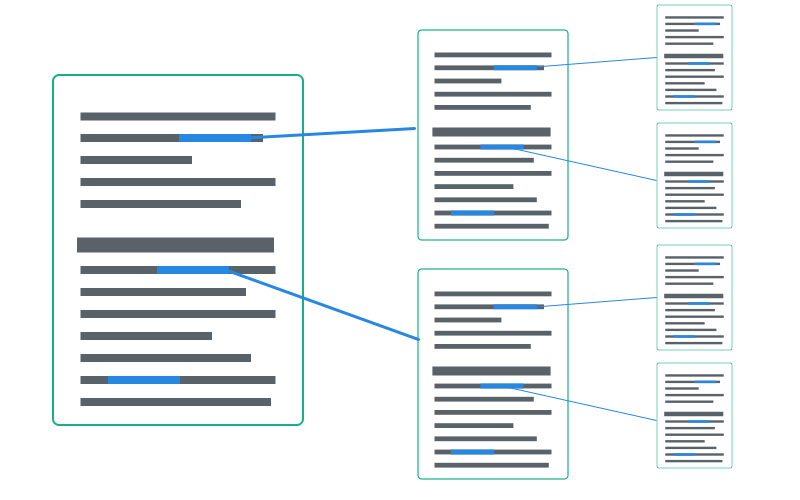
</div></script></section><section  data-markdown><script type="text/template">## The web — a suite of tools</script></section><section  data-markdown><script type="text/template">### HTTP
<div>
  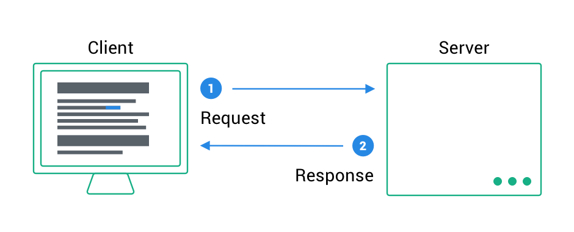
</div>
<a class="source_link" target="_blank"
href="https://en.wikipedia.org/wiki/Hypertext_Transfer_Protocol">
HTTP Wikipedia
</a></script></section><section  data-markdown><script type="text/template">### DNS

www.google.com

<div>
  
</div>
<a class="source_link" target="_blank"
href="https://en.wikipedia.org/wiki/Domain_Name_System">
DNS wikipedia
</a></script></section><section  data-markdown><script type="text/template">### Browsers
<div>
  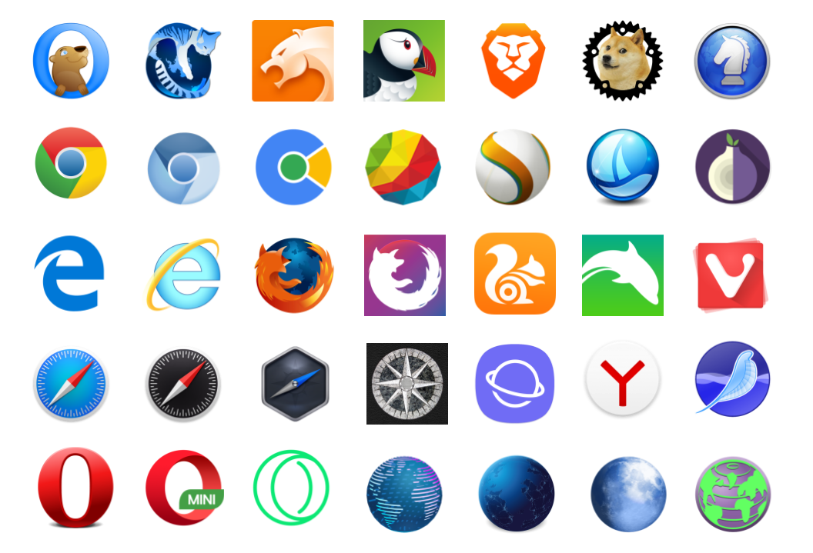
</div></script></section><section  data-markdown><script type="text/template"><code class="large">
  HTML / CSS / JS
</code>

<a class="source_link" target="_blank"
href="https://developer.mozilla.org/en-US/docs/Web/HTML">
HTML MDN
</a></script></section><section  data-markdown><script type="text/template">
# HTML

## The web building blocks</script></section><section  data-markdown><script type="text/template">
<!-- .slide: data-background="assets/matrix_code.gif" -->

# 👇

<h2 style="color: #FFF;">cmd/ctrl + alt + I</h2></script></section><section  data-markdown><script type="text/template">
### HTML is a markup language based on XML

[Extensible Markup Language (XML)](https://en.wikipedia.org/wiki/XML)
</script></section><section  data-markdown><script type="text/template">### It's all about boxes containing boxes

<div>
  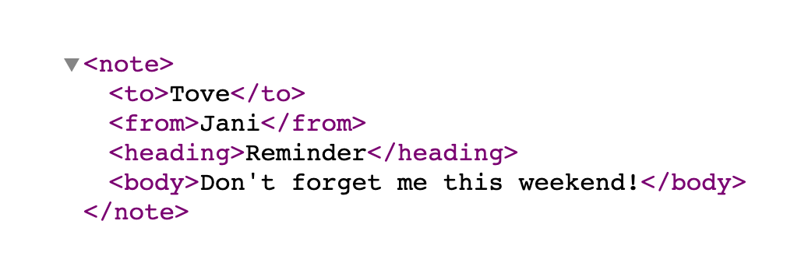
</div></script></section><section  data-markdown><script type="text/template">
### HTML Element Structure

<div class="markup">
  <pre>&lt;</pre><span class="markup__tagname">tag</span> <br>
  &nbsp;&nbsp;<span class="markup__attribute">attribute</span><span>="value"</span><br>
  <pre>&gt;</pre><br>
  &nbsp;&nbsp;<span class="markup__content">Content?</span><br>
  <pre>&lt;/</pre><span class="markup__tagname">tag</span><pre>&gt;</pre><br>
</div>
</script></section><section  data-markdown><script type="text/template">
### Common HTML elements

```html
<html>Document root</html>
<head>Document meta header</head>
<body>Page content</body>
<div>Default container</div>
<h1>Heading 1</h1>...<h6>Heading 6</h6>
<p>Paragraph</p>
<a>HyperText link</a>
<form>Form of user inputs</form>
<header>Header component</header>
<footer>Footer component</footer>
<nav>Containing navigation items</nav>
...
```

<a class="source_link" target="_blank"
href="https://developer.mozilla.org/en-US/docs/Web/HTML/Element">
HTML Elements - MDN
</a>
</script></section><section  data-markdown><script type="text/template">### Elements display
<div>
  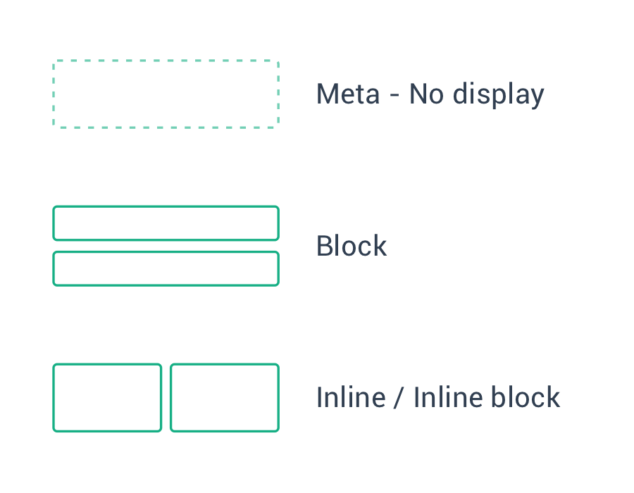
</div></script></section><section  data-markdown><script type="text/template"><iframe
  class="codesandbox"
  src="https://codesandbox.io/embed/html-displays-m99h3?fontsize=14&hidenavigation=1&theme=dark"
  title="html-basis"
  allow="geolocation; microphone; camera; midi; vr; accelerometer; gyroscope; payment; ambient-light-sensor; encrypted-media; usb"
  sandbox="allow-modals allow-forms allow-popups allow-scripts allow-same-origin"
></iframe></script></section><section  data-markdown><script type="text/template">### HTML 1, 2, 3, 4, 5...

#### Doctype

```html
HTML 5
<!DOCTYPE html>

HTML 4.01
<!DOCTYPE HTML PUBLIC "-//W3C//DTD HTML 4.01//EN"
"http://www.w3.org/TR/html4/strict.dtd">
```

<a class="source_link" target="_blank"
href="https://en.wikipedia.org/wiki/HTML#HTML_versions_timeline">
HTML Versions
</a>
</script></section><section  data-markdown><script type="text/template">### HTML5 minimal page

```html
<!DOCTYPE html>
<html>
    <head>
        <meta charset="utf-8" />
        <title>Titre</title>
    </head>

    <body>
    </body>
</html>
```</script></section><section  data-markdown><script type="text/template">## 👷
### Let's type some code</script></section><section  data-markdown><script type="text/template"><iframe
  class="codesandbox"
  src="https://codesandbox.io/embed/sleepy-edison-jeq14?autoresize=1&fontsize=14&hidenavigation=1&theme=dark"
  title="html-basis"
  allow="geolocation; microphone; camera; midi; vr; accelerometer; gyroscope; payment; ambient-light-sensor; encrypted-media; usb"
  sandbox="allow-modals allow-forms allow-popups allow-scripts allow-same-origin"
></iframe>

<aside class="notes"><p>Build basic information display of article (Title, p, image)</p>
</aside></script></section><section  data-markdown><script type="text/template">## How to dive into the docs?
[Mozilla Developer Network (MDN) — HTML documentation](https://developer.mozilla.org/en-US/docs/Web/HTML)</script></section><section  data-markdown><script type="text/template"># ✋
### Ok, but all this looks pretty ugly right?</script></section><section  data-markdown><script type="text/template">How to get from
<div>
  
</div></script></section><section  data-markdown><script type="text/template">To
<div>
  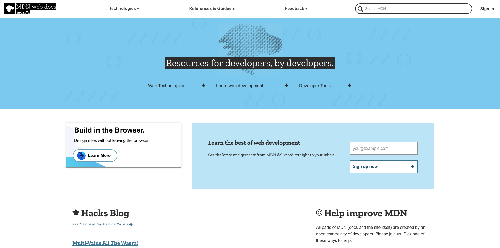
</div></script></section><section  data-markdown><script type="text/template">
# HTML ❤️ CSS

```html
<link href="styles/style.css" rel="stylesheet">
```</script></section><section  data-markdown><script type="text/template">
## CSS

[Cascading Style Sheet](https://developer.mozilla.org/en-US/docs/Web/CSS)

```css
p {
  color: red;
}
.title {
  font-size: 2rem;
}
```</script></section><section  data-markdown><script type="text/template">
### Selectors

```html
<body>
    <p class="someClass">
        <span id="someIdentifier">Foo</span>
    </p>
    <p class="someClass">Bar</p>
</body>
```

```css
/* HTML tags: tag selector */
body { margin: 0 }

/* HTML class attribute: class selector */
.someClass { color: blue; }

/* HTML id attribute: id selector */
#someIdentifier { font-size: 8rem; }
```</script></section><section  data-markdown><script type="text/template">
### Properties

```css
p {
  display: block;
  color: #000;
  font-family: "Helvetica", "Arial", sans-serif;
  border: none;
  font-style: normal;
  font-size: 1rem;
  font-weight: bold;
  line-height: 1.3em;
  /* ... */
}
```

[CSS Reference](https://developer.mozilla.org/en-US/docs/Web/CSS/Reference)</script></section><section  data-markdown><script type="text/template">
### Layout flow

```css
position: static;
position: relative;
position: absolute;
position: fixed;
```

<a class="source_link" target="_blank"
href="https://developer.mozilla.org/en-US/docs/Web/CSS/CSS_Flow_Layout">
Layout Flow docs
</a>
</script></section><section  data-markdown><script type="text/template">
### Pseudo-selectors

```html
<a class="someLink" href="/any">Some link</a>
```

```css
.someLink { color: white; }
.someLink:hover { color: black; }
.someLink:active { color: blue; }
.someLink:visited { color: blue; }
```

<a class="source_link" target="_blank"
href="https://developer.mozilla.org/en-US/docs/Web/CSS/Pseudo-classes">
Pseudo-classes docs
</a>
</script></section><section  data-markdown><script type="text/template">
<iframe
  class="codesandbox"
  src="https://codesandbox.io/embed/html-css-basis-ee5d0?fontsize=14&hidenavigation=1&theme=dark"
  title="html-css-basis"
  allow="geolocation; microphone; camera; midi; vr; accelerometer; gyroscope; payment; ambient-light-sensor; encrypted-media; usb"
  sandbox="allow-modals allow-forms allow-popups allow-scripts allow-same-origin"
></iframe>

<aside class="notes"><p>Flux Display /Inheritance / selector depth</p>
</aside></script></section><section  data-markdown><script type="text/template">
### The box model

<div>
  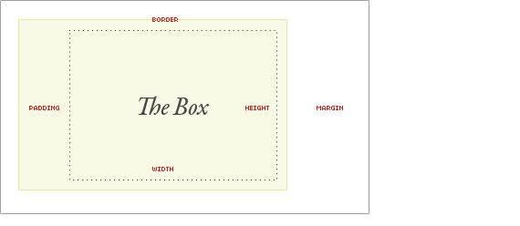
</div>

<a class="source_link" target="_blank"
href="https://css-tricks.com/the-css-box-model/">
The box model - CSS Tricks
</a>
</script></section><section  data-markdown><script type="text/template">
### The common padding + width issue

<div>
  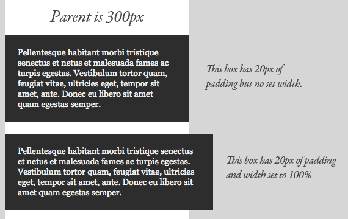
</div>

<a class="source_link" target="_blank"
href="https://css-tricks.com/the-css-box-model/#article-header-id-1">
The Default Width of Block Level Boxes - CSS Tricks
</a>

</script></section><section  data-markdown><script type="text/template">### Solution: Box sizing

```css
*, *:before, *:after {
  box-sizing: border-box;
}
```

<a class="source_link" target="_blank"
href="https://css-tricks.com/the-css-box-model/#article-header-id-1">
Best box-sizing Reset Methods - CSS Tricks
</a>
</script></section><section  data-markdown><script type="text/template">
<iframe
     src="https://codesandbox.io/embed/gifted-roentgen-eexyw?fontsize=14&hidenavigation=1&theme=dark"
     class="codesandbox"
     title="hetic-mm4-box-sizing"
     allow="geolocation; microphone; camera; midi; vr; accelerometer; gyroscope; payment; ambient-light-sensor; encrypted-media; usb"
     sandbox="allow-modals allow-forms allow-popups allow-scripts allow-same-origin"
   ></iframe>

<a class="source_link" target="_blank"
href="https://css-tricks.com/the-css-box-model/">
The box model - CSS Tricks
</a>
</script></section><section  data-markdown><script type="text/template">
### Background images

```css
  background-image:url('cover.jpg');
  background-repeat: no-repeat;
  background-size: cover;
  background-position: 50%;
```

<a class="source_link" target="_blank"
href="https://css-tricks.com/almanac/properties/b/background-image/">
background-image - CSS Tricks
</a>
</script></section><section  data-markdown><script type="text/template">
### CSS custom properties
#### variables

```css
:root {
  --pimary-default: #192EEE;
  --content-black: #21243B;
  --content-dark: #535465;
}
```

<a class="source_link" target="_blank"
href="https://developer.mozilla.org/en-US/docs/Web/CSS/Using_CSS_custom_properties">
Using CSS custom properties - MDN
</a>
</script></section><section  data-markdown><script type="text/template">
## ⚠️ (2019)

<div>
  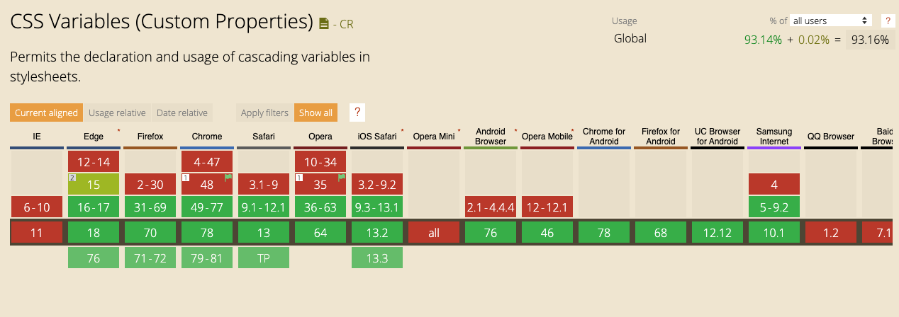
</div>

<a class="source_link" target="_blank"
href="https://caniuse.com/#feat=css-variables">
https://caniuse.com/#feat=css-variables - CanIUse
</a>
</script></section><section  data-markdown><script type="text/template">
# 🎨 🔮
## Design to code</script></section><section  data-markdown><script type="text/template">#### Thinking in boxes 👇

<div>
  
</div></script></section><section  data-markdown><script type="text/template"><div>
  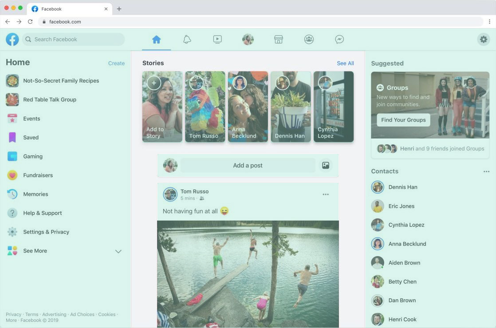
</div></script></section><section  data-markdown><script type="text/template"><div>
  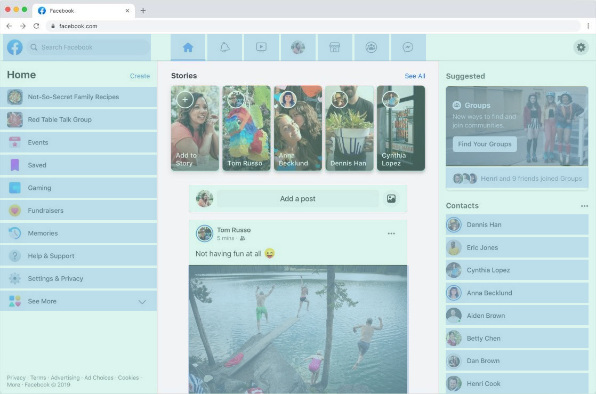
</div></script></section><section  data-markdown><script type="text/template"><div>
  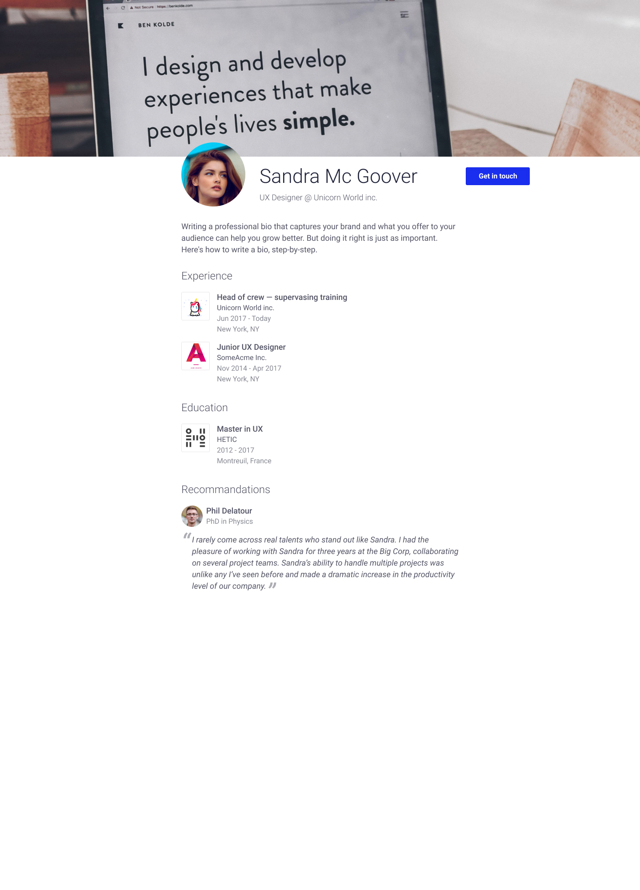
</div></script></section><section  data-markdown><script type="text/template"><iframe class="figma" src="https://www.figma.com/embed?embed_host=share&url=https%3A%2F%2Fwww.figma.com%2Ffile%2FimpVe29Fh49HCzcxiyGNVJ%2FHETIC-MM4-2019-HTML-CSS%3Fnode-id%3D0%253A1" allowfullscreen></iframe>
</script></section><section  data-markdown><script type="text/template">
### TODO

- 🖼 Layout
- 🏞 Images
- 🔠 Fonts
- 📏 Spacing
- 💅 Fine tune
</script></section><section  data-markdown><script type="text/template">
<iframe
  class="codesandbox"
  src="https://codesandbox.io/embed/hetic-mm4-profile-exercise-nxkc7?fontsize=14&hidenavigation=1&theme=dark"
  title="hetic-mm4-profile-exercise"
  allow="geolocation; microphone; camera; midi; vr; accelerometer; gyroscope; payment; ambient-light-sensor; encrypted-media; usb"
  sandbox="allow-modals allow-forms allow-popups allow-scripts allow-same-origin"
></iframe>
</script></section><section  data-markdown><script type="text/template">### CSS Reset

```css
html, body, div, span, applet, object, iframe,
h1, h2, h3, h4, h5, h6, p, blockquote, pre,
a, abbr, acronym, address, big, cite, code,
del, dfn, em, img, ins, kbd, q, s, samp {
  margin: 0;
	padding: 0;
	border: 0;
	font-size: 100%;
	font: inherit;
	vertical-align: baseline;
}
```

<a class="source_link" target="_blank"
href="http://meyerweb.com/eric/tools/css/reset/">
Eric Meyer's reset
</a>
</script></section><section  data-markdown><script type="text/template">#### CSS Positioning

   <iframe
     src="https://codesandbox.io/embed/strange-rgb-d2v73?fontsize=14&hidenavigation=1&theme=dark"
     class="codesandbox"
     title="hetic-mm4-html-positioning"
     allow="geolocation; microphone; camera; midi; vr; accelerometer; gyroscope; payment; ambient-light-sensor; encrypted-media; usb"
     sandbox="allow-modals allow-forms allow-popups allow-scripts allow-same-origin"
   ></iframe>
</script></section><section  data-markdown><script type="text/template">
### CSS Flexbox

<a class="source_link" target="_blank"
href="https://css-tricks.com/snippets/css/a-guide-to-flexbox/">
Flexbox - CSS Tricks
</a>

</script></section><section  data-markdown><script type="text/template">
# 📱🖥
## Responsive interfaces
</script></section><section  data-markdown><script type="text/template">
#### on modern devices

## A pixel is not a pixel
</script></section><section  data-markdown><script type="text/template">
### Browser viewport

```html
<meta
name="viewport"
content="width=device-width, initial-scale=1"
>
```

<a class="source_link" target="_blank"
href="https://developer.mozilla.org/en-US/docs/Mozilla/Mobile/Viewport_meta_tag">
Using the viewport meta tag to control layout on mobile browsers - MDN
</a>
</script></section><section  data-markdown><script type="text/template"><div>
  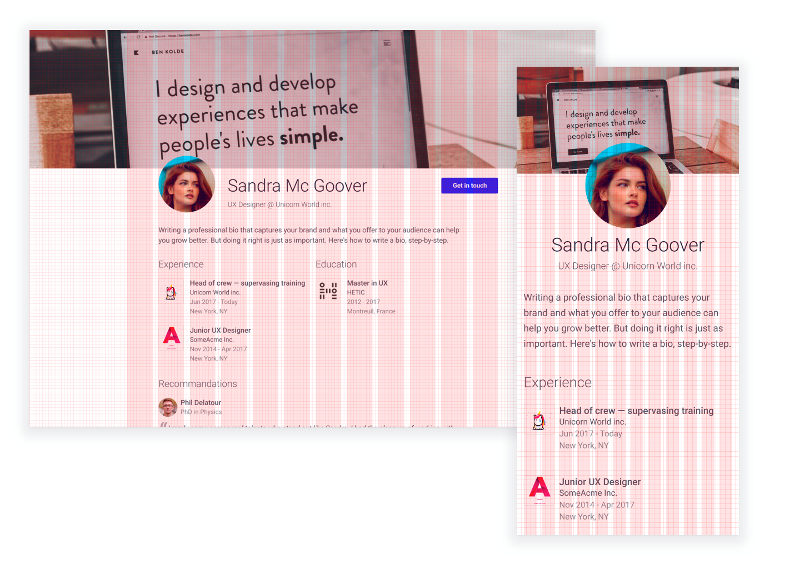
</div></script></section><section  data-markdown><script type="text/template">
## 📱 > 🖥
### Think mobile first
</script></section><section  data-markdown><script type="text/template">
### CSS Media queries

```css
@media screen and (min-width: 1280px) {
  /* some style */
}
```
<a class="source_link" target="_blank"
href="https://developer.mozilla.org/en-US/docs/Web/CSS/@media">
 @media - MDN
</a>
</script></section><section  data-markdown><script type="text/template">
### Mobile first @media-queries

```css
/* Mobile */
/* Tablet */ @media screen and (min-width: 768px) {}
/* Desktop */ @media screen and (min-width: 1160px) {}
/* Large Desktop */ @media screen and (min-width: 1400px) {}
```
</script></section><section  data-markdown><script type="text/template"><a class="source_link" target="_blank"
href="https://minicss.org/">
 Mini CSS Docs
</a>

<!-- .slide: data-background="assets/minicss.png" --></script></section><section  data-markdown><script type="text/template">
### CDN resource

```html
<link
rel="stylesheet"
href="https://cdnjs.cloudflare.com/ajax/libs/mini.css/3.0.1/mini-default.min.css"
>
```</script></section><section  data-markdown><script type="text/template">### CSS Grid

<div>
  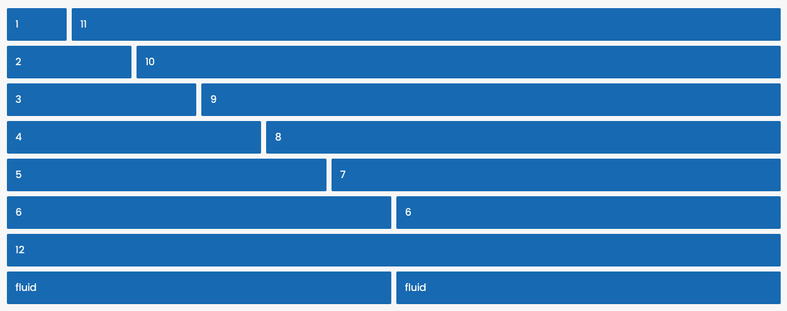
</div>

<a class="source_link" target="_blank"
href="https://minicss.org/docs#grid">
 Grid system - Mini CSS
</a></script></section><section  data-markdown><script type="text/template">
<iframe class="figma" src="https://www.figma.com/embed?embed_host=share&url=https%3A%2F%2Fwww.figma.com%2Ffile%2FimpVe29Fh49HCzcxiyGNVJ%2FHETIC-MM4-2019-HTML-CSS%3Fnode-id%3D86%253A4" allowfullscreen></iframe>
</script></section><section  data-markdown><script type="text/template">
<iframe
     src="https://codesandbox.io/embed/hetic-mm4-responsive-profile-exercise-fnw1v?fontsize=14&hidenavigation=1&theme=dark"
     class="codesandbox"
     title="hetic-mm4-responsive-profile-exercise"
     allow="geolocation; microphone; camera; midi; vr; accelerometer; gyroscope; payment; ambient-light-sensor; encrypted-media; usb"
     sandbox="allow-modals allow-forms allow-popups allow-scripts allow-same-origin"
   ></iframe>
</script></section><section  data-markdown><script type="text/template">
# ⌨️ 🖥
## Managing forms
</script></section><section  data-markdown><script type="text/template">
### HTML Basis

```html
<form class="formContainer" action="" method="POST">
  <input name="name" type="text" />
  <input name="email" type="email" required />
  <textarea name="message" cols="30" rows="10"></textarea>
  <input type="submit" value="Send" />
</form>
```
<a class="source_link" target="_blank"
href="https://developer.mozilla.org/en-US/docs/Web/HTML/Element/form">
 Form Element - MDN
</a>
</script></section><section  data-markdown><script type="text/template">### Input CSS

```html
<input name="firstName" type="text" />
```

```css
input:focus { border: 1px solid blue; }
input::placeholder { color: #EEE; }
```
</script></section><section  data-markdown><script type="text/template">
### Tip

```html
  <label for="emailInput">Email</label> 
  <input id="emailInput" name="email" type="email" />
```

`emailInput` is used both for `input.id` and `label.for` making possible to `:focus` the input by clicking the label
</script></section><section  data-markdown><script type="text/template">
<iframe
  src="https://codesandbox.io/embed/hetic-mm4-html-form-elements-3tgem?fontsize=14&hidenavigation=1&theme=dark"
  class="codesandbox"
  title="hetic-mm4-html-form-elements"
  allow="geolocation; microphone; camera; midi; vr; accelerometer; gyroscope; payment; ambient-light-sensor; encrypted-media; usb"
  sandbox="allow-modals allow-forms allow-popups allow-scripts allow-same-origin"
></iframe>
</script></section><section  data-markdown><script type="text/template">
# 🔍👁
## Accessibility
</script></section><section  data-markdown><script type="text/template"># Resources
</script></section><section  data-markdown><script type="text/template">
# 🛠
## Dev tools
</script></section><section  data-markdown><script type="text/template"><div>
  
</div>

## VS Code

Simple code editor

[https://code.visualstudio.com/download](https://code.visualstudio.com/download)
</script></section><section  data-markdown><script type="text/template"><div>
  
</div>

## NodeJS

Javascript runner

[https://nodejs.org/en/download/](https://nodejs.org/en/download/)
</script></section><section  data-markdown><script type="text/template"><div>
  
</div>

## Terminal

```bash
$ node -v
$ npm -v
```</script></section><section  data-markdown><script type="text/template"><div>
  
</div>

## Code Sandbox

Collaborative online editor

[https://codesandbox.io/](https://codesandbox.io/)
</script></section><section  data-markdown><script type="text/template"><div>
  
</div>

### Can I use?

[caniuse.com](https://caniuse.com)
</script></section><section  data-markdown><script type="text/template">
## That's all folks

Thank you
</script></section></div>
    </div>

    <script src="./lib/js/head.min.js"></script>
    <script src="./js/reveal.js"></script>

    <script>
      function extend() {
        var target = {};
        for (var i = 0; i < arguments.length; i++) {
          var source = arguments[i];
          for (var key in source) {
            if (source.hasOwnProperty(key)) {
              target[key] = source[key];
            }
          }
        }
        return target;
      }

      // Optional libraries used to extend on reveal.js
      var deps = [
        { src: './lib/js/classList.js', condition: function() { return !document.body.classList; } },
        { src: './plugin/markdown/marked.js', condition: function() { return !!document.querySelector('[data-markdown]'); } },
        { src: './plugin/markdown/markdown.js', condition: function() { return !!document.querySelector('[data-markdown]'); } },
        { src: './plugin/highlight/highlight.js', async: true, callback: function() { hljs.initHighlightingOnLoad(); } },
        { src: './plugin/zoom-js/zoom.js', async: true },
        { src: './plugin/notes/notes.js', async: true },
        { src: './plugin/math/math.js', async: true }
      ];

      // default options to init reveal.js
      var defaultOptions = {
        controls: true,
        progress: true,
        history: true,
        center: true,
        transition: 'default', // none/fade/slide/convex/concave/zoom
        dependencies: deps
      };

      // options from URL query string
      var queryOptions = Reveal.getQueryHash() || {};

      var options = extend(defaultOptions, {"transition":"slide","transitionSpeed":"fast"}, queryOptions);
    </script>


    <script>
      Reveal.initialize(options);
    </script>
  </body>
</html>
